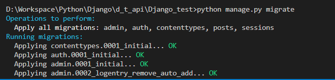

完成應用程式(APP)的新增後，接下來，本文將利用Django的Migration(資料遷移)，來建立資料庫。重點包含：
Django專案中的posts應用程式(APP)，我們在資料庫中建立「景點位置」及「景點貼文」資料表，並且是一對多的關係(例如：中壢景點位置，可能有一到多個的景點貼文。這時候則可以在models.py中設計如下的類別(Class)：首先，類別(Class)需繼承models模組中的Model類別，其中封裝了存取資料庫的所有操作，例如新增、刪除、修改、查詢資料等
而models模組中，提供許多抽象化資料表欄位的類別，例如：
Migration(資料遷移)實際上是一個Python檔案，用來同步Django專案下models.py中的類別(Class)及資料庫。也就是說，只要Django專案中的models.py有任何的變動，都要執行一次Migration(資料遷移)，來同步資料庫
我們可以看到其中建立的Migtation檔案，存放在App底下的migration資料夾中。0001_initial.py檔案內容如下:
Migration(資料遷移)檔案中，定義了將要在資料庫執行的動作。而接下來所要執行的migrate指令，則會依照此Migration(資料遷移)檔案，同步models.py中所建立的類別至資料庫中：
連接MySQL資料庫，我們在MySQL Workbench裡創建一個資料庫我們在資料庫底下創建一個mysqltutorial並在setting.py裡的DATABASES裡改寫連接伺服器的名稱帳號等等